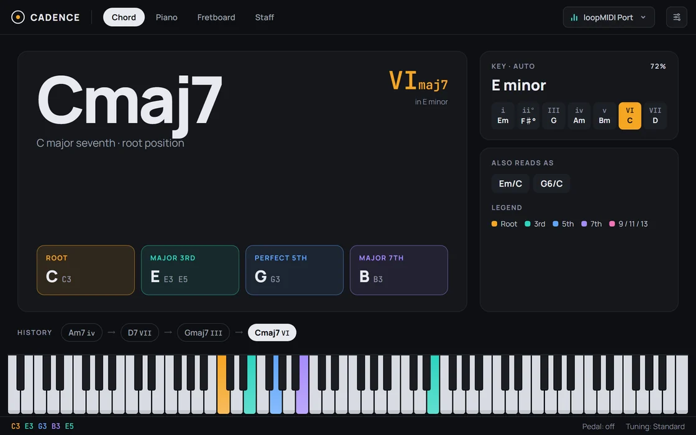
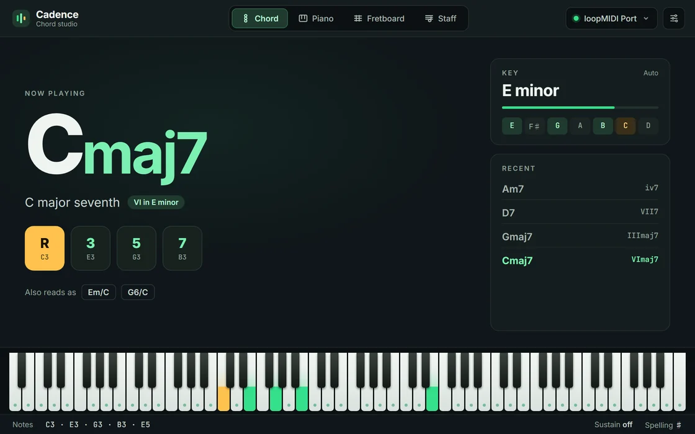

AuraLink Studio / Cadence
弹一个和弦 ——
立刻看到名字、琴键与按法。
接上 MIDI 键盘（或从编曲软件送 MIDI 过来），Cadence 立刻报出你弹的和弦，并同时用四种方式画出来：音符在 88 键上向上流动、真实吉他指板上的按法、大谱表，以及整首歌的调。给键盘手和吉他手用的和弦工具。
价格免费

不同之处
一个和弦，四种视角 —— 同时呈现。
学和弦最花时间的不是按键，而是搞清楚刚弹的是什么、它在哪儿。Cadence 实时给出答案。
- 即时报和弦名弹几个音就显示大大的和弦名 —— 从三和弦到七和弦、九和弦、十一和弦、十三和弦与挂留和弦，还有别名、转位和弦（斜线和弦），以及它在调中的级数，如 E 小调中的 VImaj7。
- 四视角同步和弦页（名称与音程）、钢琴页（音流）、指板页（吉他指板）、谱表页（大谱表）—— 即时切换，都在讲你正在弹的音。
- 音符如玻璃上的流水88 键随手点亮，每个音拖出一道向上流动的光带 —— 一眼看清哪个音在响，顺滑不闪烁。
- 真实吉他指板上的按法和弦直接画在指板上，标出按弦位置、根音与空弦；点指板可循环切换不同把位。
- 顺带识别调性Cadence 跟踪你弹的音并推断调（大调/小调）。调性卡片显示音阶或顺阶和弦，当前和弦高亮，旁边是你刚弹过的和弦进行。也可以自己锁定一个调。
- 接键盘或接编曲软件MIDI 键盘直接插上即用；想分析编曲软件里的音符，就通过虚拟 MIDI 端口 loopMIDI 转接（下载包内附带，含分步指南）。
1.1 新增
两种界面，一键切换。
Verdant 保留熟悉的深绿底色；Graphite 采用中性底色，按每个音在和弦中的作用着色 —— 根音、三音、五音、七音、延伸音 —— 四个标签页颜色一致。顶部开关一键切换，下次打开仍会记住。

随你调
按你喜欢的方式看。
自定义配色
自由更改所弹音、根音和延音的颜色。
升号或降号
音名与和弦名可按升号（♯）或降号（♭）记写，贴合乐曲。
多种调弦
吉他指板支持标准调弦、Drop D 调弦、DADGAD 调弦与开放 G 调弦。
锁定调
自动识别调，或在你已知时直接指定。
音名与别名
可开关音名显示，以及同一和弦的其它叫法。
88 键与延音踏板
完整 A0–C8 音域，并跟随延音踏板显示被延续的音。
吉他指板
和弦，就在手指要按的地方。
不只是和弦名 —— Cadence 直接告诉你在指板上怎么按，根音高亮，让你知道从哪儿起。

开始使用
下载、插上、一弹就有。
下载是一个 .zip，内含程序、loopMIDI 安装包和三语指南。插上 MIDI 键盘，在右上角选中它即可弹奏；要配合编曲软件，按 loopMIDI 步骤连接。点设置按钮、复制机器码发给我们即可获取激活码。从 1.0 升级？1.1 的机器码格式已更改，请发送新的机器码换取新激活码。